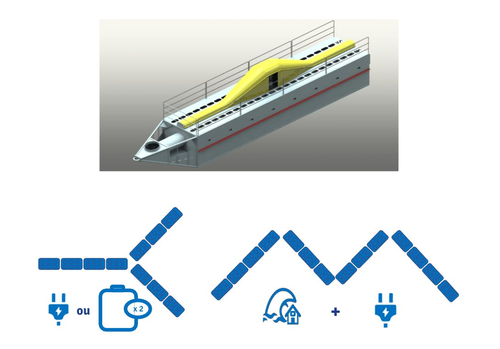

Technologie brevetée
Un moteur à piston
alimenté par les vagues
Basé sur le principe des Colonnes d'Eau Oscillantes Multiples (OWC), HACE convertit la houle en flux d'air continu qui entraîne une turbine générant de l'électricité.

Fonctionne dès 5 cm de vague
1
Captation des vagues
La houle entre dans les chambres ouvertes sous la surface. Fonctionne avec toutes les vagues, même chaotiques.
2
Compression de l'air
L'eau oscillante comprime l'air dans les chambres via des soupapes unidirectionnelles, créant un flux continu.
3
Turbine à air
Le flux d'air continu entraîne une turbine accessible au sec, facile à maintenir. Pièces de moins de 25 kg.
4
Électricité stable
Production non-intermittente, idéale pour électrolyseurs et désalinisateurs. En phase avec la demande réseau.
Architecture modulaire scalable
Chaque module se combine en étoile, ligne ou chevron — de l'alimentation locale au parc GW avec protection côtière intégrée.
